🗼 도쿄 87건
팝업스토어 · 47
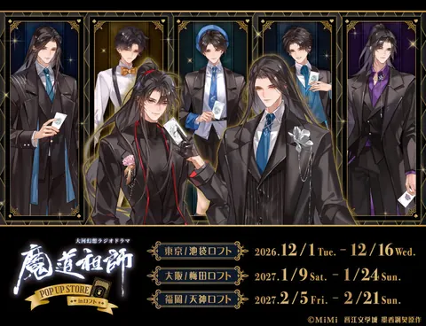
마도조사 POP UP STORE in 로프트 (이케부쿠로 로프트)12/1(화) ~ 12/16(수)📍 이케부쿠로 로프트 11층 캐릭터 잡화 매장 (池袋ロフト)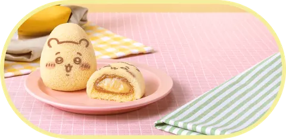
치이카와 × 도쿄바나나 POP UP STORE (JR 우에노역)12/1(화) ~ 12/21(월)📍 JR 우에노역 중앙 개찰구 밖 그랜드 콘코스 행사장러브라이브! 선샤인!!×HMV POP UP SHOP (HMV&BOOKS 시부야)12/2(수) ~ 12/15(화)📍 HMV&BOOKS SHIBUYA (시부야 모디 내)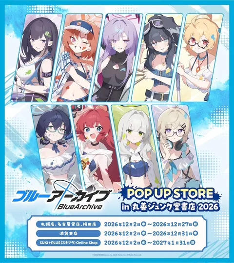
블루 아카이브 POP UP STORE in 마루젠 준쿠도 서점 2026 (이케부쿠로 본점)12/2(수) ~ 12/31(목)📍 준쿠도 서점 이케부쿠로 본점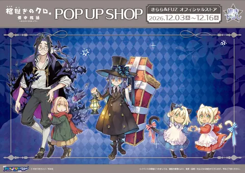
관을 짊어진 쿠로。 회중여화 POP UP SHOP (신주쿠 마루이 아넥스)12/3(목) ~ 12/16(수)📍 키라라&FUZ 오피셜 스토어 (신주쿠 마루이 아넥스 2층)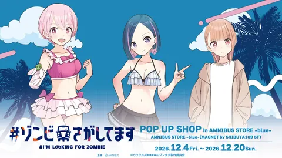
TV 애니메이션 #좀비 찾고 있습니다 POP UP SHOP (AMNIBUS STORE -blue-)12/4(금) ~ 12/20(일)📍 AMNIBUS STORE -blue- (MAGNET by SHIBUYA109 5층)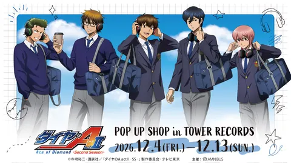
TV애니 『다이아의 A actⅡ -Second Season-』 POP UP SHOP in TOWER RECORDS (시부야)12/4(금) ~ 12/13(일)📍 타워레코드 시부야점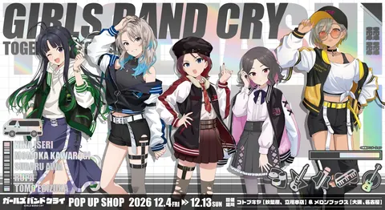
걸즈 밴드 크라이 스카잔 POP UP (고토부키야 아키하바라관·다치카와 본점)12/4(금) ~ 12/13(일)📍 고토부키야 아키하바라관 1층 / 고토부키야 다치카와 본점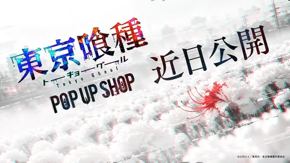
도쿄 구울 POP UP SHOP (돈키호테 아키하바라점)12/4(금) ~ 12/27(일)📍 돈키호테 아키하바라점 5층리코리스 리코일 POP UP SHOP in 마루이 (마치다 모디·폰초 스타일)12/4(금) ~ 12/13(일)📍 마치다 모디 4층신 테니스의 왕자 Pickup Visual Lounge (타워레코드 시부야점)12/4(금) ~ 12/18(금)📍 타워레코드 시부야점 2층 TOWER SPACE SHIBUYA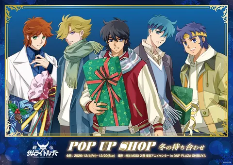
요로이덴 사무라이 트루퍼 POP UP SHOP 「겨울의 약속」 (도쿄 애니메 센터)12/4(금) ~ 12/20(일)📍 東京アニメセンター in DNP PLAZA SHIBUYA (시부야 MODI 2층)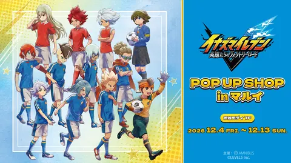
이나즈마 일레븐 영웅들의 빅토리 로드 POP UP SHOP (시부야 모디)12/4(금) ~ 12/13(일)📍 시부야 모디 7층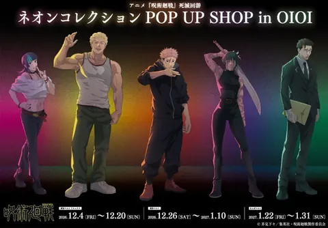
주술회전 사멸회유 네온 컬렉션 POP UP SHOP (신주쿠 마루이 아넥스)12/4(금) ~ 12/20(일)📍 신주쿠 마루이 아넥스 6층 캘린더리움6킨니쿠맨 POP UP SHOP 「FAVORITE COLLECTION」 (도쿄 애니메 센터 시부야)12/4(금) ~ 12/20(일)📍 도쿄 애니메 센터 in DNP PLAZA SHIBUYA (시부야 MODI 2층)호리미야 15th POP UP SHOP (유라쿠초 마루이)12/4(금) ~ 12/20(일)📍 유라쿠초 마루이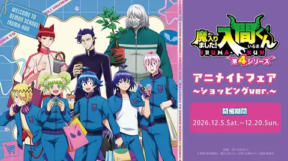
마계 입문했습니다! 이루마 군 애니메이트 페어12/5(토) ~ 12/20(일)📍 애니메이트 이케부쿠로 본점·아키하바라점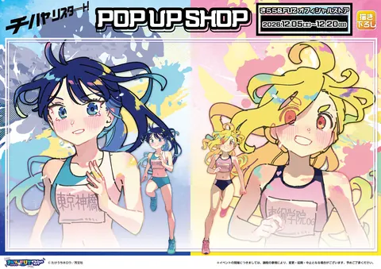
치하야 리스타트! POP UP SHOP (신주쿠 마루이 아넥스)12/5(토) ~ 12/20(일)📍 키라라&FUZ 오피셜 스토어 (신주쿠 마루이 아넥스 2층)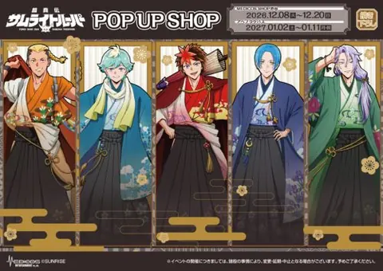
갑진전 사무라이 트루퍼 POP UP SHOP (MEDICOS SHOP 시부야)12/8(화) ~ 12/20(일)📍 MEDICOS SHOP 시부야 (MAGNET by SHIBUYA109 5층)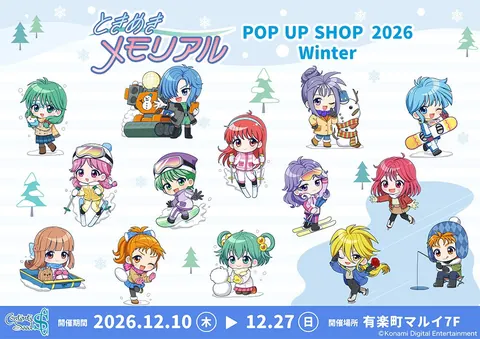
도키메키 메모리얼 POP UP SHOP 2026 Winter (유라쿠초 마루이)12/10(목) ~ 12/27(일)📍 유라쿠초 마루이 7F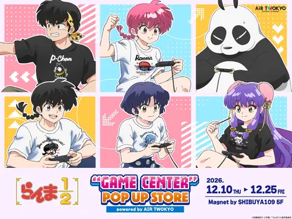
란마 1/2 "GAME CENTER" POP UP STORE (MAGNET by SHIBUYA109)12/10(목) ~ 12/25(금)📍 MAGNET by SHIBUYA109 5층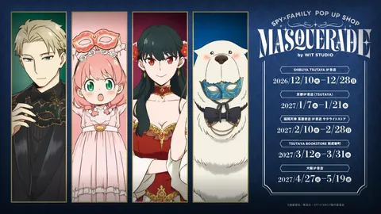
스파이 패밀리 POP UP SHOP -MASQUERADE- (시부야 츠타야 IP서점)12/10(목) ~ 12/28(월)📍 SHIBUYA TSUTAYA 6층 IP서점 (시부야)3학년 Z반 긴파치 선생 POP UP SHOP (테레토 혼포 도쿄역점)12/11(금) ~ 12/27(일)📍 테레토 혼포。 도쿄역점 (도쿄역 이치방가이 B1 도쿄 캐릭터 스트리트)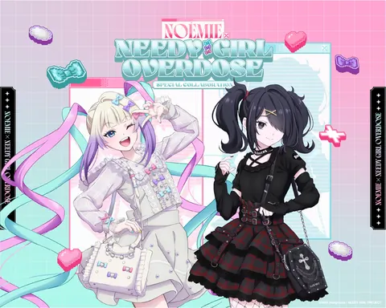
NOÉMIE × NEEDY GIRL OVERDOSE 콜라보 POP UP (유라쿠초 마루이)12/11(금) ~ 12/20(일)📍 유라쿠초 마루이 7층 이벤트 스페이스PUNKS△TRIANGLE POP UP SHOP (신주쿠 마루이 아넥스)12/11(금) ~ 12/20(일)📍 신주쿠 마루이 아넥스 3층 캘린다리움 4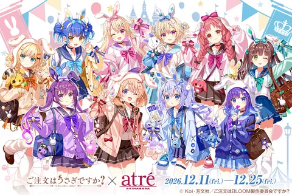
『주문은 토끼입니까? BLOOM』 「주문은 아트레입니까? in 아키하바라」12/11(금) ~ 12/25(금)📍 아트레 아키하바라1 2F 이벤트 스페이스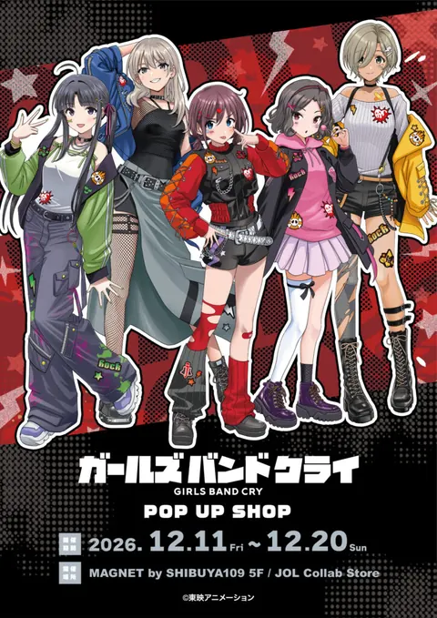
걸즈 밴드 크라이 POP UP STORE (MAGNET by SHIBUYA109 JOL Collab Store)12/11(금) ~ 12/20(일)📍 JOL Collab Store (MAGNET by SHIBUYA109 5층)나츠메 우인장 POP UP STORE in 로프트 제4막 (이케부쿠로 로프트)12/11(금) ~ 12/27(일)📍 이케부쿠로 로프트 11층 버라이어티 잡화 매장닥터 스톤 오지장 대집합 POP UP STORE (eeo 이케부쿠로 P'PARCO)12/11(금) ~ 12/23(수)📍 eeo POP-UP STORE (이케부쿠로 P'PARCO 3층)종말의 세라프 POP UP SHOP in 마루이 (신주쿠 마루이 멘)12/11(금) ~ 12/20(일)📍 신주쿠 마루이 멘 8F 이벤트 스페이스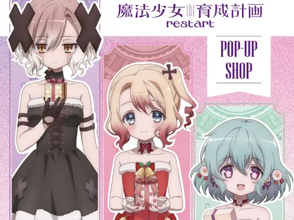
『마법소녀 육성계획 restart』 POP-UP SHOP (볼크스 아키하바라 호비천국2)12/12(토) ~ 12/27(일)📍 볼크스 아키하바라 호비천국2 1층 특설 회장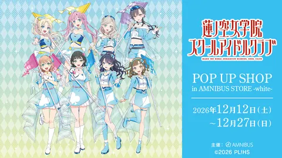
러브라이브! 하스노소라 여학원 스쿨 아이돌 클럽 POP UP SHOP (AMNIBUS STORE -white-)12/12(토) ~ 12/27(일)📍 AMNIBUS STORE -white- (시부야 모디 4층)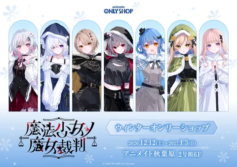
마법소녀의 마녀재판 윈터 온리숍 (애니메이트 아키하바라 2호관)12/12(토) ~ 1/3(일)📍 애니메이트 아키하바라점 2호관 6층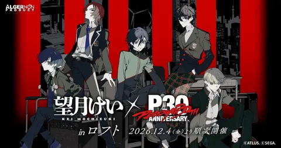
모치즈키 케이 × PERSONA 30th ANNIVERSARY (시부야 로프트)12/16(수) ~ 1/7(목)📍 시부야 로프트 1층 마사카 스테이지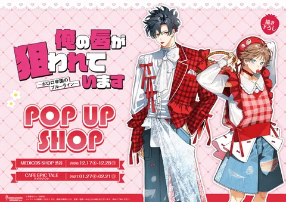
내 입술이 노려지고 있습니다 POP UP STORE (MEDICOS SHOP 시부야)12/17(목) ~ 12/28(월)📍 MEDICOS SHOP 시부야 (MAGNET by SHIBUYA109 5층)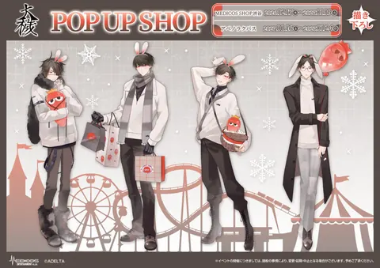
오에(大穢) 테마파크 Ver. POP UP STORE (MEDICOS SHOP 시부야)12/17(목) ~ 1/19(화)📍 MEDICOS SHOP 시부야 (MAGNET by SHIBUYA109 5층)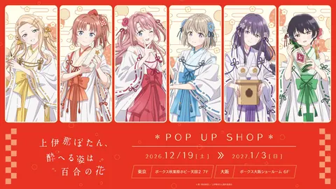
가미이나 보탄, 취한 모습은 백합의 꽃 POP UP SHOP (볼크스 아키하바라)12/19(토) ~ 1/3(일)📍 볼크스 아키하바라 호비천국2 7층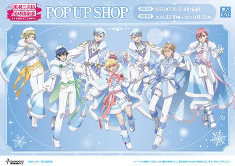
극장판 「미남고교 지구방위부 ETERNAL LOVE!」 POP UP SHOP 제2탄 (MEDICOS SHOP 신주쿠)12/19(토) ~ 1/5(화)📍 MEDICOS SHOP 신주쿠 (신주쿠 마루이 아넥스 2F)배드 걸 POP UP SHOP (키라라&FUZ 오피셜 스토어 신주쿠)12/19(토) ~ 1/8(금)📍 키라라&FUZ 오피셜 스토어 (신주쿠 마루이 아넥스 2F)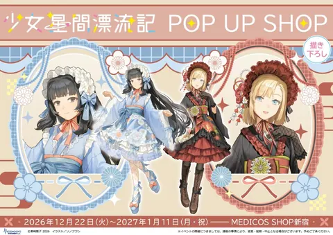
소녀 성간 표류기 POP UP SHOP (MEDICOS SHOP 신주쿠)12/22(화) ~ 1/11(월)📍 MEDICOS SHOP 신주쿠 (신주쿠 마루이 아넥스 2F)츠키우타. POP UP SHOP (MEDICOS SHOP 시부야)12/23(수) ~ 1/6(수)📍 MEDICOS SHOP 시부야 (MAGNET by SHIBUYA109 5층)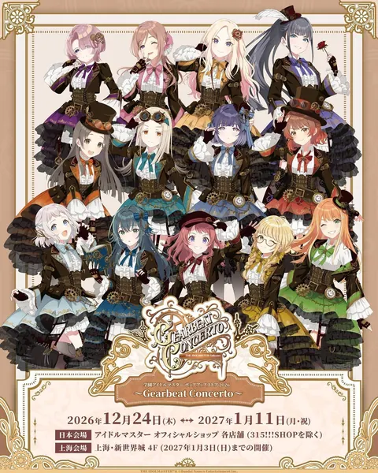
학원 아이돌마스터 팝업스토어 2026 ~Gearbeat Concerto~ (아트레 아키하바라)12/24(목) ~ 1/11(월)📍 아이돌마스터 오피셜숍 아트레 아키하바라점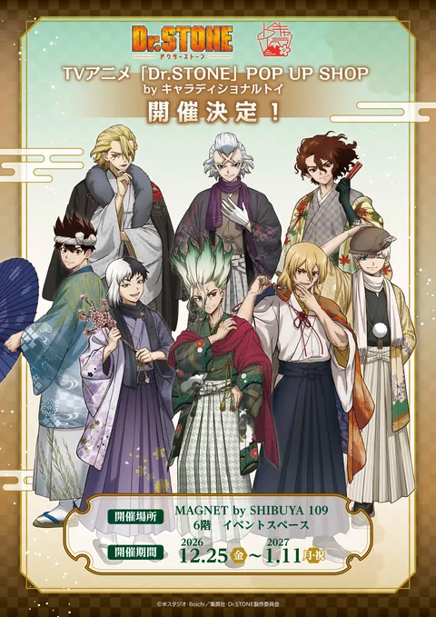
Dr.STONE POP UP SHOP by 캐러디셔널 토이 (MAGNET by SHIBUYA109)12/25(금) ~ 1/11(월)📍 MAGNET by SHIBUYA109 6층 이벤트 스페이스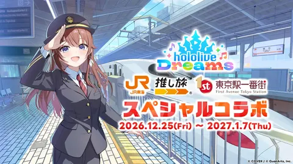
연말연시도 호로드리! 도쿄역 이치방가이 스페셜 콜라보 (hololive Dreams × JR도카이 오시타비)12/25(금) ~ 1/7(목)📍 도쿄역 이치방가이 (팝업은 도쿄 캐릭터 스트리트)주술회전 판텀 퍼레이드 3주년 POP UP STORE (애니메이트 이케부쿠로 본점)12/26(토) ~ 1/11(월)📍 애니메이트 이케부쿠로 본점 5층 새틀라이트 스페이스주술회전 팬텀 퍼레이드 환영야행본포 3주년 POP UP STORE (이케부쿠로)12/26(토) ~ 1/11(월)📍 애니메이트 이케부쿠로 본점 5F 새틀라이트 스페이스ときめきタイムスリップ 마법의 천사 크리미 마미 POP UP STORE (HMV&BOOKS 시부야)12/29(화) ~ 1/11(월)📍 HMV&BOOKS SHIBUYA (시부야 모디 5층)콜라보카페 · 23
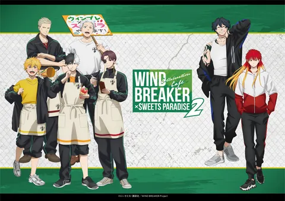
WIND BREAKER × 스위츠 파라다이스 제2탄 (신주쿠 동쪽 출구점)12/1(화) ~ 12/27(일)📍 스위츠 파라다이스 신주쿠 동쪽 출구점 (신주쿠 FF빌딩 B1)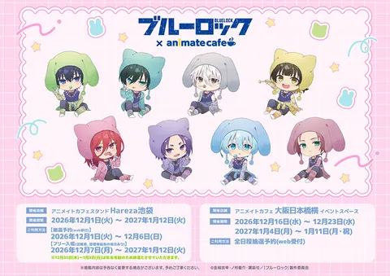
블루 록 × 애니메이트 카페 (스탠드 Hareza 이케부쿠로 · 테이크아웃)12/1(화) ~ 1/12(화)📍 애니메이트 카페 스탠드 Hareza 이케부쿠로 (나카이케부쿠로 공원 내)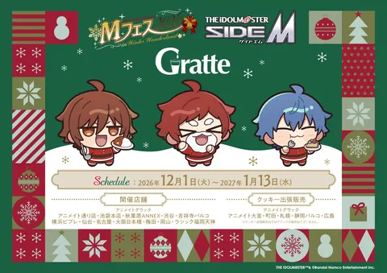
아이돌마스터 SideM Mフェス2026 × 애니메이트 그라테 (도쿄)12/1(화) ~ 1/13(수)📍 애니메이트 그라테 이케부쿠로 본점·애니메이트 거리점·아키하바라 ANNEX·시부야·기치조지 파르코🎌츠키우타。 Six Gravity × 홍차 전문점 오시아도 콜라보 카페 (하라주쿠·다이칸야마)12/1(화) ~ 1/11(월)📍 홍차 전문점 오시아도 하라주쿠 (2층) · 홍차 전문점 테시에 다이칸야마점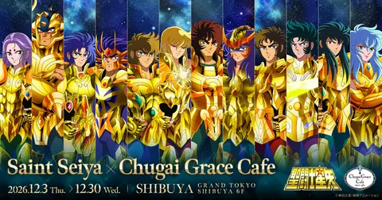
성투사 성시 × Chugai Grace Cafe (시부야점)12/3(목) ~ 12/30(수)📍 Chugai Grace Cafe 시부야점 (그랜드 도쿄 시부야 빌딩 6층)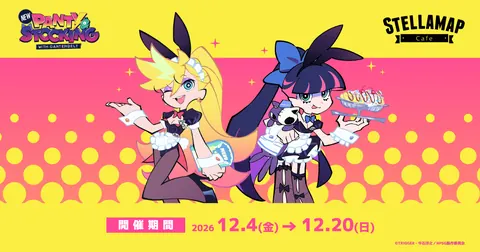
New 팬티 & 스타킹 with 가터벨트 × STELLAMAP CAFE (아키하바라)12/4(금) ~ 12/20(일)📍 STELLAMAP CAFE (아키하바라)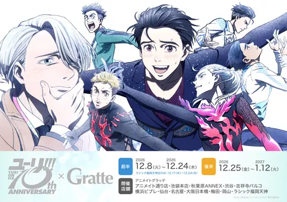
유리!!! on ICE 10주년 × 애니메이트 그라테 (도쿄)12/8(화) ~ 1/12(화)📍 애니메이트 그라테 이케부쿠로 본점·애니메이트 거리점·아키하바라 ANNEX·시부야·기치조지 파르코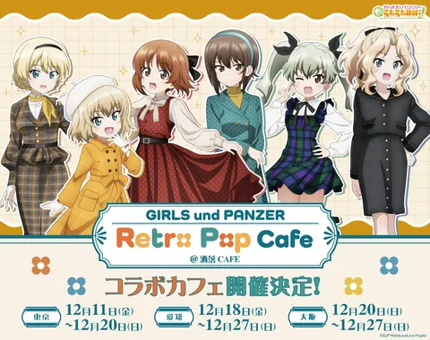
걸즈 앤 판처 레트로 팝 카페 at 샤레 CAFE (하라카도점)12/11(금) ~ 12/20(일)📍 샤레 CAFE 하라카도점 (도큐 플라자 하라주쿠 하라카도 6층)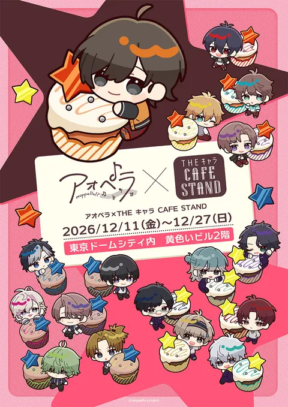
아오페라 -aoppella!?- × THE캬라 CAFE STAND (도쿄돔시티)12/11(금) ~ 12/27(일)📍 도쿄돔시티 노란 빌딩 2층 「THE캬라 CAFE STAND」오타쿠에게 상냥한 갸루는 없다?! 코스프레 킷사 (이치가야)12/11~13, 12/19~20 (5일간)📍 이치가야 (지요다구 구단키타 4-2-15)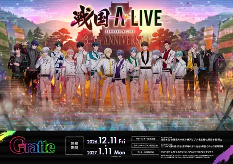
전국 A LIVE 3.5주년 기념 × 애니메이트 그라테 (도쿄)12/11(금) ~ 1/11(월)📍 애니메이트 그라테 이케부쿠로 본점·애니메이트 거리점·아키하바라 ANNEX·시부야·기치조지 파르코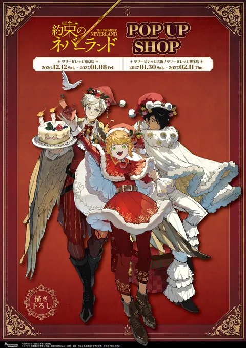
약속의 네버랜드 POP UP SHOP & CAFE (트리 빌리지 도쿄)12/12(토) ~ 1/8(금)📍 트리 빌리지 도쿄점 (도쿄 소라마치 이스트야드 1층)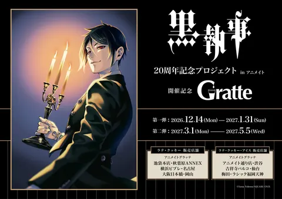
흑집사 20주년 기념 프로젝트 in 애니메이트 개최 기념 그라테 (제1탄) (이케부쿠로 본점 외 도쿄)12/14(월) ~ 1/31(일)📍 애니메이트 그라테 이케부쿠로 본점 외 (아키하바라 ANNEX·애니메이트 거리점·시부야·기치조지 파르코)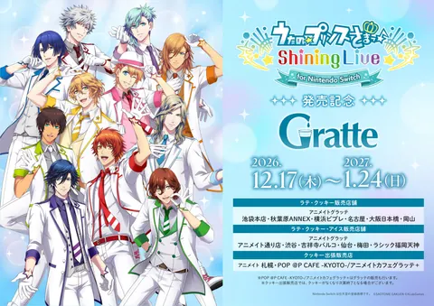
노래의☆왕자님♪ Shining Live (Switch) 발매 기념 그라테 (애니메이트 이케부쿠로 본점 외 도쿄)12/17(목) ~ 1/24(일)📍 애니메이트 그라테 이케부쿠로 본점 외 (아키하바라 ANNEX·애니메이트 거리점·시부야·기치조지 파르코)장송의 프리렌 Cafe ~Winter Journey~ (신주쿠)12/17(목) ~ 2/7(일)📍 BOX cafe&space 루미네 에스트 신주쿠 1호점 (8층)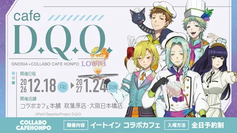
TV애니 「그노시아」 × 콜라보 카페 본포 cafe D.Q.O. LOOP3 (아키하바라점)12/18(금) ~ 1/24(일)📍 콜라보 카페 본포 아키하바라점 (샤톤 빌딩 2F)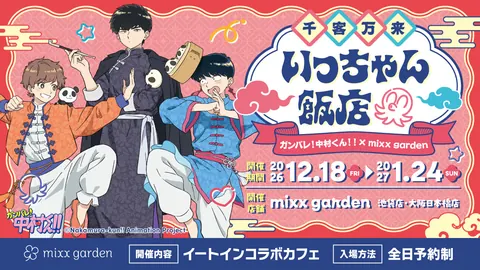
TV애니 「힘내라! 나카무라 군!!」 × mixx garden (이케부쿠로점)12/18(금) ~ 1/24(일)📍 mixx garden 이케부쿠로점 (THE KINDAI 1 IKEBUKURO 4F)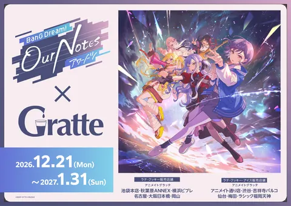
BanG Dream! Our Notes × 애니메이트 그라테 (도쿄)12/21(월) ~ 1/31(일)📍 애니메이트 그라테 이케부쿠로 본점·아키하바라 ANNEX·애니메이트 거리점·시부야·기치조지 파르코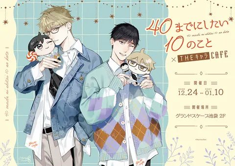
40까지 하고 싶은 10가지 × THE캬라 CAFE (이케부쿠로)12/24(목) ~ 1/10(일)📍 그랜드스케이프 이케부쿠로 2F 「THE캬라 CAFE 그랜드스케이프 이케부쿠로점」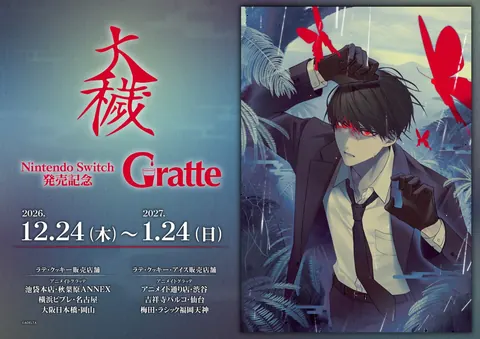
오에(大穢) Nintendo Switch 발매 기념 그라테 (이케부쿠로 본점 외 도쿄)12/24(목) ~ 1/24(일)📍 애니메이트 그라테 이케부쿠로 본점 외 (아키하바라 ANNEX·애니메이트 거리점·시부야·기치조지 파르코)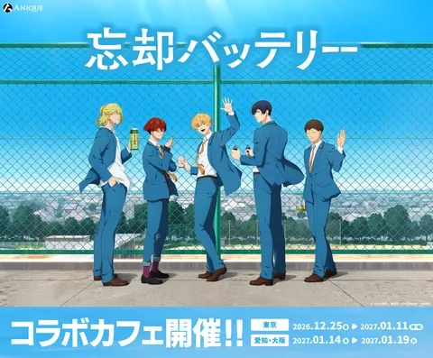
망각 배터리 콜라보 카페 (하라주쿠 하라카도)12/25(금) ~ 1/11(월)📍 샤레 CAFE 하라카도점 (도큐 플라자 하라주쿠 하라카도 6층)니지산지 × 스위츠 파라다이스 콜라보 카페 제17탄 (신주쿠 동쪽 출구점)12/29(화) ~ 1/24(일)📍 스위츠 파라다이스 신주쿠 동쪽 출구점 (신주쿠 FF빌딩 B1)니지산지 × 스위츠 파라다이스 콜라보 카페 제17탄 (우에노 마루이점)12/29(화) ~ 1/24(일)📍 스위츠 파라다이스 우에노 마루이점 (上野マルイ)전시·행사 · 11
「변덕쟁이 오렌지☆로드」 다카다 아케미 화집 출간 기념전 (EDITION88 고탄다)12/3(목) ~ 12/13(일)📍 EDITION88 플래그십숍 (도쿄 디자인센터 1층, 고탄다)흡혈귀는 툭하면 죽는다展 연재 10주년 기념 파티 FINAL (기치조지 갤러리 제논)12/5(토) ~ 12/27(일)📍 기치조지 갤러리 제논TV 애니메이션 Dr.STONE전 과학왕국 뮤지엄 (이케부쿠로 선샤인시티)12/10(목) ~ 1/4(월)📍 선샤인시티 전시홀 A (월드 임포트 마트 빌딩 4층)선샤인 수족관 × 블루 아카이브 「아비도스 아쿠아리움 ~바다의 관찰 기록~」12/11(금) ~ 1/17(일)📍 선샤인 수족관 (선샤인시티, 특설회장 게스트룸)M-1 감정 폭발전 (도쿄 · 라포레 뮤지엄 하라주쿠)12/12(토) ~ 12/26(토)📍 라포레 뮤지엄 하라주쿠 (라포레 하라주쿠 6층)다카하시 카즈키 원화전 YU-GI-OH! ART WORKS (크리에이티브 뮤지엄 도쿄)12/12(토) ~ 2/21(일)📍 CREATIVE MUSEUM TOKYO (주오구 교바시 TODA BUILDING 6F)캐릭캐릭 체인지(しゅごキャラ！) 20주년 기념 원화전 ~The Unlocked Sparkle~ (도쿄 소라마치)12/12(토) ~ 12/27(일)📍 도쿄 소라마치 5층 스페이스 634센본자쿠라전 -15th Anniversary Exhibition- (유라쿠초 마루이)12/19(토) ~ 1/11(월)📍 유라쿠초 마루이 7층 SUKI PLACE시로탄 느긋느긋 푹신푹신전 (도쿄 스카이트리)12/19(토) ~ 1/19(화)📍 도쿄 스카이트리 타워야드 1F SKYTREE SPACE아쿠타미 게게 『주술회전』 완결전 (신주쿠)12/25(금) ~ 1/25(월)📍 신주쿠 스미토모 빌딩 삼각광장TV애니 『주술회전』 × 선샤인시티 프린스호텔12/26(토) ~ 3/25(목)📍 선샤인시티 프린스호텔 25층 콘셉트 플로어 「IKEPRI25」·B1
플리마켓 · 6
시부야 키타야 공원 Vintage & Artisan Market12/12(토)📍 시부야구립 키타야 공원 (시부야구 진난 1-7-3)시부야 키타야 공원 Vintage & Artisan Market12/13(일)📍 시부야구립 키타야 공원 (시부야구 진난 1-7-3)시부야 키타야 공원 Vintage & Artisan Market12/20(일)📍 시부야구립 키타야 공원 (시부야구 진난 1-7-3)조시가야 데즈쿠리이치 (수공예 시장)12/20(일)📍 조시가야 기시보진도시부야 키타야 공원 Vintage & Artisan Market12/26(토)📍 시부야구립 키타야 공원 (시부야구 진난 1-7-3)시부야 키타야 공원 Vintage & Artisan Market12/27(일)📍 시부야구립 키타야 공원 (시부야구 진난 1-7-3)
🏯 오사카 52건
팝업스토어 · 25
블루 아카이브 POP UP STORE in 마루젠 준쿠도 서점 2026 (우메다점)12/2(수) ~ 12/27(일)📍 MARUZEN&준쿠도 서점 우메다점 (차야마치 챠스카)PUNKS△TRIANGLE POP UP SHOP (덴노지 미오)12/4(금) ~ 12/13(일)📍 덴노지 미오 본관 6층 미오라보TV애니 『다이아의 A actⅡ -Second Season-』 POP UP SHOP in TOWER RECORDS (아베노 Hoop)12/4(금) ~ 12/13(일)📍 타워레코드 아베노 Hoop점드라마 「훗타라 도샤부리 메로우 레인」 팝업스토어 (만화전 덴노지)12/4(금) ~ 12/15(화)📍 덴노지 미오 본관 6F (만화전 덴노지)시로탄 × 카나헤이의 소동물 POP UP SHOP (오사카)12/4(금) ~ 12/13(일)📍 난바 마루이 5층 이벤트 스페이스아이돌마스터 밀리언 라이브! ARC-FLAGS 팝업 코너 (코토부키야 닛폰바시)12/4(금) ~ 12/20(일)📍 코토부키야 닛폰바시점「바키 시리즈」 35주년 기념 POP UP SHOP (난바 마루이)12/5(토) ~ 12/13(일)📍 난바 마루이 5층 이벤트 스페이스마계 입문했습니다! 이루마 군 애니메이트 페어 (오사카)12/5(토) ~ 12/20(일)📍 애니메이트 오사카 닛폰바시점·우메다점마법소녀를 동경해서 POP UP CORNER in 고토부키야 (오사카)12/5(토) ~ 12/15(화)📍 고토부키야 닛폰바시전희절창 심포기어 XV 15th Anniversary POP UP in LOFT (난바)12/5(토) ~ 12/20(일)📍 난바 파크스 5층 난바 로프트 특설 회장모치즈키 케이 × PERSONA 30th ANNIVERSARY (오사카 이즈미 로프트)12/8(화) ~ 12/22(화)📍 오사카 이즈미 로프트 (라라포트 이즈미)LE SSERAFIM TOUR 'PUREFLOW' 교세라 돔 오사카 POP UP STORE (신사이바시 PARCO)12/9(수) ~ 12/20(일)📍 신사이바시 PARCO 9층 EVENT SPACE지뢰계 헤비급 러버 팝업 (오사카 닛폰바시)12/10(목) ~ 12/29(화)📍 CAFE EPIC TALE (닛폰바시 엑제 레지던스 타워 1층)3학년 Z반 긴파치 선생 POP UP SHOP (테레토 혼포 신사이바시점)12/11(금) ~ 12/14(월)📍 테레토 혼포。 신사이바시점 (신사이바시 PARCO)Collar×Malice 10th Anniversary (난바 마루이)12/11(금) ~ 12/13(일)📍 난바 마루이 5층 이벤트 스페이스나츠메 우인장 POP UP STORE in 로프트 제4막 (우메다 로프트)12/11(금) ~ 12/27(일)📍 한신 우메다 본점 6층 우메다 로프트 버라이어티 잡화 특설 스페이스반지의 제왕 25주년 POP-UP STORE (덴노지 미오)12/18(금) ~ 1/4(월)📍 덴노지 미오 6F (만화전 덴노지)가미이나 보탄, 취한 모습은 백합의 꽃 POP UP SHOP (볼크스 오사카)12/19(토) ~ 1/3(일)📍 볼크스 오사카 쇼룸 6층가정교사 히트맨 REBORN! POP UP SHOP (아베노 라쿠바스)12/19(토) ~ 12/27(일)📍 아베노 라쿠바스 (아베노 Hoop 4F)GLITCH COLLECTION POP UP STORE (신사이바시 PARCO)12/24(목) ~ 1/11(월)📍 신사이바시 PARCO 9층 이벤트 스페이스학원 아이돌마스터 팝업스토어 2026 ~Gearbeat Concerto~ (오사카 닛폰바시)12/24(목) ~ 1/11(월)📍 아이돌마스터 오피셜숍 오사카 닛폰바시점단간론파 시리즈×ORIHARA POP UP SHOP (난바 마루이)12/25(금) ~ 1/11(월)📍 난바 마루이 5층 이벤트 스페이스에스더 버니 × 마이멜로디 POP-UP STORE (루쿠아 이레)12/25(금) ~ 1/7(목)📍 루쿠아 이레 2F주술회전 판텀 퍼레이드 3주년 POP UP STORE (애니메이트 오사카 닛폰바시)12/26(토) ~ 1/11(월)📍 애니메이트 오사카 닛폰바시 온리숍 스페이스주술회전 팬텀 퍼레이드 환영야행본포 3주년 POP UP STORE (오사카 닛폰바시)12/26(토) ~ 1/11(월)📍 애니메이트 오사카 닛폰바시점 온리숍 스페이스
콜라보카페 · 21
WIND BREAKER × 스위츠 파라다이스 제2탄 (우메다점)12/1(화) ~ 12/27(일)📍 스위츠 파라다이스 우메다점 (우메다 라쿠텐치 빌딩 2층)무대 『도검난무』 양전 × 쉐라톤 미야코 호텔 오사카 콜라보 애프터눈 티12/1(화) ~ 12/25(금)📍 쉐라톤 미야코 호텔 오사카 레스토랑&라운지 바 eu(유)아이돌마스터 SideM Mフェス2026 × 애니메이트 그라테 (오사카)12/1(화) ~ 1/13(수)📍 애니메이트 그라테 오사카 닛폰바시·우메다성투사 성시 × Chugai Grace Cafe (오사카점·테이크아웃)12/3(목) ~ 12/30(수)📍 Chugai Grace Cafe 오사카점 (난바 마루이 1층)우국의 모리아티 콜라보 카페 (오사카 신사이바시)12/3(목) ~ 12/7(월)📍 샤레 CAFE 신사이바시 BIGSTEP점 (빅스텝 3층)BoA 일본 데뷔 25주년 CAFE & SHOP (트리비리지 오사카)12/5(토) ~ 12/17(목)📍 트리비리지 오사카점 (HEP FIVE 우메다 8F Cross Store 내)유리!!! on ICE 10주년 × 애니메이트 그라테 (오사카)12/8(화) ~ 1/12(화)📍 애니메이트 그라테 오사카 닛폰바시·우메다사이키 쿠스오의 재난 콜라보 카페 「ΨCHIC DINER」 (오사카)12/9(수) ~ 1/11(월)📍 CAFE EPIC TALE (닛폰바시 엑제 레지던스 타워 1층)란마 1/2 아이스크림 카페 (오사카 신사이바시)12/10(목) ~ 12/17(목)📍 샤레 CAFE 신사이바시 BIGSTEP점 (빅스텝 3층)전국 A LIVE 3.5주년 기념 × 애니메이트 그라테 (오사카)12/11(금) ~ 1/11(월)📍 애니메이트 그라테 오사카 닛폰바시·우메다흑집사 20주년 기념 프로젝트 in 애니메이트 개최 기념 그라테 (제1탄) (애니메이트 우메다·오사카 닛폰바시)12/14(월) ~ 1/31(일)📍 애니메이트 우메다 (라테·쿠키·아이스) · 애니메이트 오사카 닛폰바시 (라테·쿠키)블루 록 × 애니메이트 카페 출장판 (오사카 닛폰바시 옆 이벤트 스페이스 · 12월)12/16(수) ~ 12/23(수)📍 애니메이트 카페 오사카 닛폰바시 옆 이벤트 스페이스노래의☆왕자님♪ Shining Live (Switch) 발매 기념 그라테 (애니메이트 우메다·오사카 닛폰바시)12/17(목) ~ 1/24(일)📍 애니메이트 우메다 (라테·쿠키·아이스) · 애니메이트 오사카 닛폰바시 (라테·쿠키)장송의 프리렌 Cafe ~Winter Journey~ (덴노지)12/17(목) ~ 1/17(일)📍 BOX cafe&space 덴노지 MIO점 (본관 11층)TV애니 「그노시아」 × 콜라보 카페 본포 cafe D.Q.O. LOOP3 (오사카 닛폰바시점)12/18(금) ~ 1/24(일)📍 콜라보 카페 본포 오사카 닛폰바시점 (야스다 니시 빌딩 1F)TV애니 「힘내라! 나카무라 군!!」 × mixx garden (오사카 닛폰바시점)12/18(금) ~ 1/24(일)📍 mixx garden 오사카 닛폰바시점 (야스다 니시 빌딩 2층)진격의 거인 레이븐블레이드 카페 in TreeVillage (트리비리지 오사카)12/19(토) ~ 12/30(수)📍 트리비리지 오사카점 (HEP FIVE 우메다 8F Cross Store 내)걸즈 앤 판처 레트로 팝 카페 at 샤레 CAFE (신사이바시 BIGSTEP점)12/20(일) ~ 12/27(일)📍 샤레 CAFE 신사이바시 BIGSTEP점 (빅스텝 3층)BanG Dream! Our Notes × 애니메이트 그라테 (오사카)12/21(월) ~ 1/31(일)📍 애니메이트 그라테 오사카 닛폰바시·우메다오에(大穢) Nintendo Switch 발매 기념 그라테 (애니메이트 우메다·오사카 닛폰바시)12/24(목) ~ 1/24(일)📍 애니메이트 우메다 (라테·쿠키·아이스) · 애니메이트 오사카 닛폰바시 (라테·쿠키)니지산지 × 스위츠 파라다이스 콜라보 카페 제17탄 (우메다점)12/29(화) ~ 1/24(일)📍 스위츠 파라다이스 우메다점 (우메다 라쿠텐치빌딩 2층)
전시·행사 · 6
미소녀 전사 세일러문 × 유니버설 스튜디오 재팬 「세일러문 더 미라클 4-D ~문 팰리스 편 디럭스~」12/2(수) ~ 4/5(월)📍 유니버설 스튜디오 재팬 시네마 4-D 시어터가챠가챠展 in 오사카 (난바 스카이오)12/3(목) ~ 1/12(화)📍 난바 스카이오 7층 컨벤션 홀아이돌리시 세븐 in NAMJATOWN ~11th Anniversary Festival~ (오사카 우메다)12/4(금) ~ 1/11(월)📍 반다이남코 Cross Store 오사카 우메다 (HEP FIVE)강철의 연금술사×황천의 츠가이展 (한큐 우메다 본점)12/16(수) ~ 1/10(일)📍 한큐 우메다 본점 9층 한큐 우메다 갤러리·아트 스테이지『나 혼자만 레벨업』展 오사카 (라라포트 EXPOCITY)12/18(금) ~ 4/18(일)📍 미쓰이 쇼핑파크 라라포트 EXPOCITY 내 특설 회장니지산지 걸즈 아이돌 페스티벌 (인텍스 오사카)12/19(토) ~ 12/20(일)📍 인텍스 오사카
🍜 후쿠오카 26건
팝업스토어 · 12
문호 스트레이독스 × h.NAOTO 於 마루이 탈옥유희 편 (하카타 마루이)12/4(금) ~ 12/13(일)📍 하카타 마루이 5층 이벤트 스페이스마계 입문했습니다! 이루마 군 애니메이트 페어 (후쿠오카)12/5(토) ~ 12/20(일)📍 애니메이트 라식 후쿠오카 텐진점메메무라 5주년 POP UP STORE (하카타 마루이)12/5(토) ~ 12/20(일)📍 하카타 마루이 (博多マルイ)뿌요뿌요 × 하피단V POPUP STORE (후쿠오카)12/10(목) ~ 12/20(일)📍 라라포트 후쿠오카 로프트 (2F)3학년 Z반 긴파치 선생 POP UP SHOP (테레토 혼포 하카타점 · 캐널시티 하카타)12/11(금) ~ 12/27(일)📍 테레토 혼포。 with 테레Q (캐널시티 하카타 노스빌딩 1층)ART OF MIKU POP-UP SHOP (HMV&BOOKS HAKATA)12/18(금) ~ 12/30(수)📍 HMV&BOOKS HAKATA (하카타 마루이 내)극장판 『좀비랜드 사가 유메긴가 파라다이스』 개봉 1주년 기념 팝업 스토어 (게이머즈 하카타점)12/19(토) ~ 1/4(월)📍 게이머즈 하카타점학원 아이돌마스터 팝업스토어 2026 ~Gearbeat Concerto~ (하카타 버스터미널)12/24(목) ~ 1/11(월)📍 아이돌마스터 오피셜숍 하카타 버스터미널점마법사의 약속 7th Anniversary Store (하카타 마루이)12/25(금) ~ 1/10(일)📍 하카타 마루이 7층 이벤트 스페이스주술회전 사멸회유 네온 컬렉션 POP UP SHOP (하카타 마루이)12/26(토) ~ 1/10(일)📍 하카타 마루이 5층 이벤트 스페이스케로로 중사☆ 캐릭터 팝 스토어 (하카타)12/26(토) ~ 1/17(일)📍 캐널시티 하카타 사우스빌딩 B1 반다이남코 Cross Store 하카타전희절창 심포기어 XV 15th Anniversary POP UP in LOFT (텐진)12/29(화) ~ 1/17(일)📍 텐진 로프트 (미나 텐진 4층) 버라이어티 잡화 매장
콜라보카페 · 9
아이돌마스터 SideM Mフェス2026 × 애니메이트 그라테 (라식 후쿠오카 텐진)12/1(화) ~ 1/13(수)📍 애니메이트 라식 후쿠오카 텐진 (그라테)BoA 일본 데뷔 25주년 CAFE & SHOP (트리비리지 하카타)12/5(토) ~ 12/17(목)📍 트리비리지 하카타점 (캐널시티 오파 하카타 사우스 B1F Cross Store 내)전국 A LIVE 3.5주년 기념 × 애니메이트 그라테 (후쿠오카)12/11(금) ~ 1/11(월)📍 애니메이트 그라테 라식 후쿠오카 텐진흑집사 20주년 기념 프로젝트 in 애니메이트 개최 기념 그라테 (제1탄) (애니메이트 라식 후쿠오카 텐진)12/14(월) ~ 1/31(일)📍 애니메이트 라식 후쿠오카 텐진 (라테·쿠키·아이스)노래의☆왕자님♪ Shining Live (Switch) 발매 기념 그라테 (애니메이트 라식 후쿠오카 텐진)12/17(목) ~ 1/24(일)📍 애니메이트 라식 후쿠오카 텐진 (라테·쿠키·아이스)유리!!! on ICE 10주년 × 애니메이트 그라테 (라식 후쿠오카 텐진)12/17(목) ~ 1/12(화)📍 애니메이트 라식 후쿠오카 텐진 (그라테)진격의 거인 레이븐블레이드 카페 in TreeVillage (트리비리지 하카타)12/19(토) ~ 12/30(수)📍 트리비리지 하카타점 (캐널시티 오파 하카타 사우스 B1F Cross Store 내)BanG Dream! Our Notes × 애니메이트 그라테 (라식 후쿠오카 텐진)12/21(월) ~ 1/31(일)📍 애니메이트 그라테 라식 후쿠오카 텐진오에(大穢) Nintendo Switch 발매 기념 그라테 (애니메이트 라식 후쿠오카 텐진)12/24(목) ~ 1/24(일)📍 애니메이트 라식 후쿠오카 텐진 (라테·쿠키·아이스)
전시·행사 · 5
JUJUTSU KAISEN WORLD 하카타 (주술회전)12/4(금) ~ 2/23(화)📍 캐널시티 하카타 사우스빌딩 B1 반다이남코 Cross Store 하카타PARCO GAME CULTURE FES (후쿠오카 PARCO)12/11(금) ~ 12/27(일)📍 후쿠오카 PARCO (관 전체)코드기어스 20주년 전시회 (후쿠오카)12/25(금) ~ 1/25(월)📍 Space Galleria FUKUOKA (라식 후쿠오카 텐진 8층)신기한 세로루 전 created by 다카하시 카이토 (후쿠오카 PARCO)12/26(토) ~ 1/11(월)📍 후쿠오카 PARCO 본관 5F PARCO FACTORY대 다마고치전 (후쿠오카 미쓰코시)12/29(화) ~ 1/25(월)📍 후쿠오카 미쓰코시 9층 미쓰코시 갤러리
🗾 전국 27건
쿠지 · 20
이치방쿠지 극장판 약사의 혼잣말 「망비의 비보」12/5(토)📍 전국 판매처 (편의점·서점 등)이치방쿠지 에반게리온 신극장판: 파12/5(토)📍 전국 판매처 (편의점·서점 등)이치방쿠지 젤다의 전설 하이랄 컬렉션12/5(토)📍 전국 판매처 (로손, Nintendo TOKYO·OSAKA·KYOTO·FUKUOKA 등)이치방쿠지 최고심 (겨울 새 일러스트)12/5(토)📍 전국 판매처 (미니스톱·데일리 야마자키·서점 등)이치방쿠지 쵸콧토 아이카츠! 앙코르 ~최고의 스테이지를 목표로!~12/10(목)📍 이치방쿠지 ONLINE·이치방쿠지 공식숍이치방 코프레 Lil ala mode ~Black Ribbon Collection~12/12(토)📍 패밀리마트 등이치방쿠지 금색의 갓슈!!12/12(토)📍 전국 판매처 (편의점·서점 등)이치방쿠지 학원 아이돌마스터 Part712/12(토)📍 전국 판매처 (편의점·서점 등)이치방쿠지 포켓몬 30th ANNIVERSARY vol.1 (재판매)12/14(월)📍 전국 판매처 (편의점·서점 등)이치방쿠지 학생회에도 구멍은 있다!12/14(월)📍 이치방쿠지 ONLINE·이치방쿠지 공식숍이치방쿠지 오등분의 신부* ~beachside memories~12/16(수)📍 전국 판매처 (편의점·서점 등)이치방쿠지 란마 1/2 ~중화 컬렉션~12/18(금)📍 전국 판매처 (편의점·서점 등)이치방쿠지 서러브레드 제1R12/18(금)📍 전국 판매처 (편의점·서점 등)이치방쿠지 Mrs. GREEN APPLE ～SCENT OF WINTER～12/19(토)📍 로손 점포 (점포 한정)이치방쿠지 〈토이 스토리〉 Toys' Glorious Memories12/19(토)📍 세븐일레븐·이토요카도·유메타운 점포 등이치방쿠지 귀멸의 칼날 ~남매의 혈귀~12/21(월)📍 이치방쿠지 공식 숍·이치방쿠지 ONLINE이치방쿠지 신 테니스의 왕자 -나는 위로 갈 거야-12/24(목)📍 전국 판매처 (편의점·서점 등)이치방쿠지 포켓몬 30th ANNIVERSARY vol.2 (재판매)12/25(금)📍 전국 판매처 (편의점·서점 등)이치방쿠지 블루 아카이브 vol.412/26(토)📍 전국 판매처 (편의점·서점 등)이치방쿠지 해리 포터 ～Welcome to Hogwarts～12/26(토)📍 전국 판매처 (로손 등)
가챠 · 6
카타즌 Fig. 주토피아 갈라 파티 편 (가챠)12월 발매 예정 (주차 미정, 지역·매장별 상이)📍 전국 판매처 (가챠 코너 등)포케피스 모후모후 포셰트 (가챠)12월 발매 예정 (주차 미정, 지역·매장별 상이)📍 전국 판매처 (가챠 코너 등)해리 포터 마법 지팡이 컬렉션 ~해리 포터와 마법사의 돌~ (가챠)12월 발매 예정 (주차 미정, 지역·매장별 상이)📍 전국 판매처 (가챠 코너 등)나츠메 우인장 페이스형 실리콘 케이스 (가챠)12/7 주 발매 (지역·매장별 상이)📍 전국 판매처 (가챠 코너 등)도라에몽 츠나가링 참 (가챠 · 재판매)12/7 주 재판매 (지역·매장별 상이)📍 전국 판매처 (가챠 코너 등)폭신폭신 무즙 고양이 메지루시 액세서리 (가챠)12월 3째 주 발매 (지역·매장별 상이)📍 전국 판매처 (가챠 코너 등)
잡지 부록 · 1
일정·가격은 바뀔 수 있어요. 방문 전 각 행사 공식 사이트를 꼭 확인해 주세요. 11월 모아보기 →